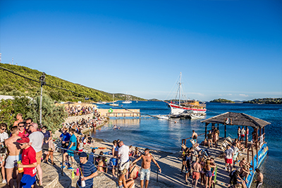
Last August the extended Defected family gathered from around the world to experience five days of unreal moments. Bringing together only the very best DJs along with likeminded people who shared in our love for house music and were ready to dance under the stars, we created something really special. Combined with a stunning sun-soaked location in an idyllic corner of Croatia’s Adriatic coast, along with the chance to genuinely relax, we had discovered the perfect spot for our very own hedonistic music paradise. We danced all night, shook hands with our favourite DJs, discovered new ones and made new friends; all in the name of house music.
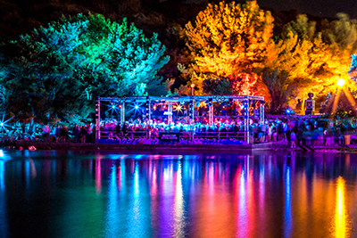
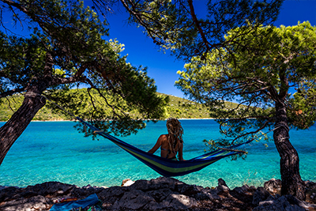
The Garden Resort, Tisno is a slice of Croatian paradise, home to some of the most beautiful and unspoilt coastline in Europe. Azure Adriatic waters, shimmering sandy beaches, guaranteed sunshine, exquisite sunsets and star-lit night skies make for the most amazing festival setting, where The Garden’s natural amphitheatre rolls gently into the surrounding forest-covered hills. Located just a short walk or water taxi ride from the historic old town of Tisno, which has many waterside bars, cafés and restaurants, the site itself manages to retain an intimacy so often missing from many modern-day electronic music festivals.
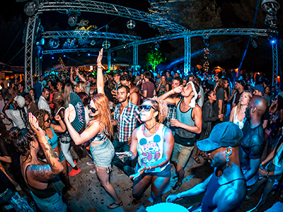
Our opening Defected Croatia festival set the benchmark high but we’re ready to out-do ourselves. In August 2017 once again there will be an array of house superstars, disco icons and underground heroes playing through the day and into the night for not five but six jam-packed days of festival. Our aim is to create an even better, more truly unforgettable and welcoming outdoor clubbing experience. Defected crew, are you ready?
Some of our fondest memories of Defected Croatia 2016 were created on board the famous Argonaughty, with a little help from Glitterbox, D-Vine Sounds, Simma Black and more. Expect more of the same, as boats will set off every day from the harbour, featuring bespoke line-ups from the world’s best underground labels and DJ crews.
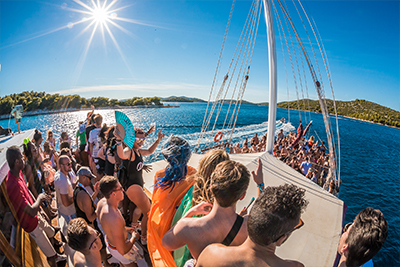
Charter your own boat from Tisno and sail around the numerous islands scattered along the coast. Boats are usually rented for one week and come complete with a skipper so you can remain fully relaxed and carefree. Head here for more info.
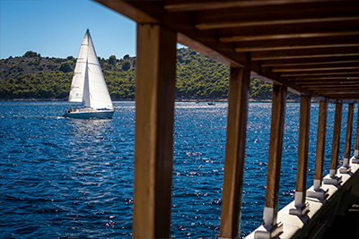
Massages are offered at various locations in Tisno, including on-site, with full body massages and other treatments available. Just ask at reception or selected hotels / guesthouses, before letting the experienced masseurs soothe away the aches and pains from a night full of dancing.
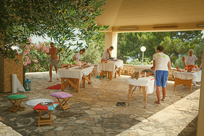
For those seeking to adventure further afield from the festival site, there are various things to do in the local area. Head here for more info.
The Main Stage showcases headline artists from around the globe and is set in a tree-lined area of parkland, just a short stroll away from the shores of the Adriatic.
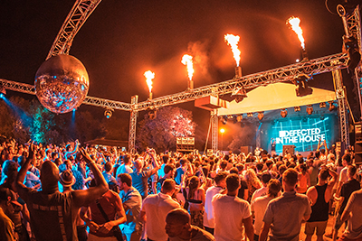
With waves lapping up to the dancefloor and stunning views out to the neighbouring islands, the Beach Stage provides that unique seaside party experience, lilos included.
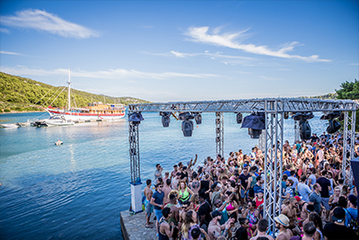
We fell in love with this legendary outdoor nightclub, a place where we’ll party under the stars until sunrise. Expect more unforgettable moments as well as surprise guests in 2017.
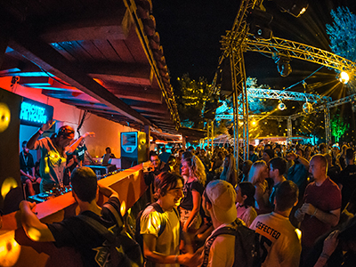
Looking to book with a crew? Our group ticket scheme means if you buy three tickets, we’ll give you the fourth for FREE! Only available for a limited time, it’s the ideal option if you and your friends want to join us at The Garden Resort for the full six days.
The Garden resort in Tisno is conveniently located halfway between the cities of Zadar (45mins) and Split (60 mins), which are both served by international airports. Low-cost airlines such as Croatia Airlines, British Airways, Eurowings, EasyJet, Monarch, Jet 2 and Ryanair fly in from over 50 destinations across Europe. Full airport transfers will also be available. Check www.skyscanner.net to find your most appropriate flight from multiple carriers.
Lots of you will now want to book your flights as Croatia Airlines, British Airways, Eurowings, Easyjet, Jet 2 and Monarch (from all over Europe) are at ideal prices for the festival dates to both Zadar and Split airports. Also, Ryanair have a couple of new flight routes (all direct to Zadar) from Manchester, Dublin (IRE), Dusseldorf/Frankfurt/ (Germany) - Paris, Marseille (France) – Billund (Denmark) – Brussels(Belgium) – Oslo and Haugesund (Norway) – Stockholm and Gothenburg (Sweden). Check out some of the tips here to ensure you’re getting the best deal on your flights here.
We recommend that you book an organised airport coach transfer through Shuttle Tours, who will bring you from Zadar or Split airport with lots of other festival revellers direct to Tisno. Their website is www.shuttletours.net
Alternatively you can make your own way to fit in with your travel plans. There are airport buses from all airports to the main centre bus terminals, and from all cities you will find regular buses to Zadar or Sibenik. Once at Zadar / Sibenik main bus terminal take a local bus to Tisno.
For details on how to get from Zagreb airport to Tisno by public bus email info@thegardenzadar.com and they will help with bus times.
This is a popular way of travelling to the festival site from Italy. More information and timetables can be found here.
The Garden Resort offers a range of on-site accommodation options to suit all budgets. Wherever you choose to stay, you’ll be surrounded by like-minded souls, all just seconds from the action. A variety of off-site accommodation is also available.
The Garden Resort offers a range of on-site accommodation options to suit all budgets.
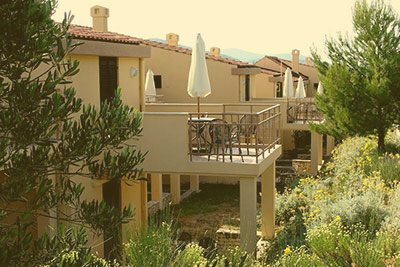
Onsite apartments for 2017 are now sold out.
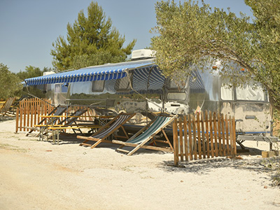
Airsteams for 2017 are now sold out.
We’ve linked up with several partners to facilitate you in booking your trip. Tisno and its surrounding areas has an array of offsite accommodation ranging from budget apartments for you and your entire crew to luxurious villas for you and your family. Click on the icons below to check out their offers to find one that best suites your accommodation needs. We want to make sure that your experience is as enjoyable and hassle-free as possible. For more information please contact Helena at The Garden Resort – enquiries@thegarden.hr
You should receive a confirmation email from Eventbrite with your tickets attached. Please print out your ticket or download it onto your phone. Bring your ticket along with your photo ID to the venue box office onsite at The Garden Resort, you will be then given wristbands.
We do not post tickets. You should receive a confirmation email from Eventbrite with your tickets attached. Please print out your ticket or download it onto your phone. If you haven’t received an Eventbrite confirmation please email croatia@defected.com
Yes, each ticket holder will be asked to show photo ID when collecting wristbands at the venue box office.
The box office opens each day at 12pm and closes at 12am.
No, all festival goers must collect their ticket in person with photo ID. Please ensure that all bookings made with multiple attendees have the correct details of each attendee so that they can collect them individually. Name changes can be made by logging in to your Eventbrite account and following the instructions on how to change a name.
You will need to change the name on each of the tickets. You can do this by logging into your Eventbrite account and following the instructions on how to change a name.
No – tickets for these are sold separately. Boat Party tickets will be announced closer to the festival. Follow us on Facebook, Instagram and Twitter to keep updated.
Unfortunately not. However, you can pass the ticket onto a friend. Name changes can be made by logging in to your Eventbrite account and following the instructions on how to change a name.
You can pass the ticket onto a friend. Name changes can be made by logging in to your Eventbrite account and following the instructions on how to change a name.
Once you have booked your ticket(s) on Eventbrite, you should receive an email confirmation containing an attachment for each ticket that you booked. If you haven’t received an Eventbrite confirmation please email croatia@defected.com
No, you will need a ticket to the main festival before you are able to attend one of the boat parties or after parties.
Yes, but please ensure you have downloaded the ticket onto your phone so that the barcode can be scanned. You will also need to bring photo ID.
Please take your Eventbrite ticket to the box office when you arrive. You can either print your ticket or download it onto your phone. Your ticket will then be exchanged for a wristband. Don’t forget you will also need photo ID.
Please email us and we’ll do our best to help croatia@defected.com
Yes, the box office at Barbarella's is open from midnight to 4am.
Yes, but please make sure you have your wristband on you at all times, as this will enable you to regain entry to the festival.
There should be plenty going on at the festival to keep you entertained, but if you’re in need of some further culture, head over to Tisno’s tourist site here
Recreational drugs are as illegal in Croatia as they are in most places around the world and their use will be looked upon very seriously by the Croatian Police.
We’ll be announcing the line-up closer to the festival. Follow us on Facebook, Instagram and Twitter to keep updated.
No – tickets for these are sold separately. Tickets for boat parties will be announced closer to the festival. Follow us on Facebook, Instagram and Twitter to keep updated.
Please email us and we’ll do our best to help croatia@defected.com
Please email us and we’ll do our best to help croatia@defected.com
As we have so many events to choose from, it is unfortunate that some events will clash. We’ll be announcing the line-up closer to the festival. Follow us on Facebook, Instagram and Twitter to keep updated.
No, you will need to purchase tickets to the festival in order to attend the boat parties and after parties.
In the ‘main reception’ for the apartments or the ‘info point’ of The Garden Resort.
There is an ATM machine on the festival site, in the main reception area of the apartments. In addition there are 8 other ATMs in the centre of Tisno, which is about a 10-15 minute walk from The Garden Tisno.
The bars have not fixed their prices for this season yet, but last year a 1/2 litre of draught beer was 35 kn and cocktails 50 kn – 70 kn. Wines, spirits and soft drinks are of course available too.
Yes, the only cards not accepted are American Express and Diners Club Card.
Private changing facilities are reserved for the use of Campers and Glampers. However, there is an open air shower on the beach and a public toilet for general use.
Onsite at The Garden Resort there is the trattoria Magnolia which is open from breakfast till late and also wraps and sandwiches at the beach food area. In Tisno village there are lots of konobas to choose from, serving a selection of local and international cuisine.
No, you can’t, but there are plenty of bars selling cocktails, beers, wines and soft drinks and also food is available too.
For onsite accommodation (apartments, airstreams & glamping) please check the Garden Resort Tisno website
www.thegarden.hr/the-garden-resort
In the first instance please try the Garden Resort website for Apartments, Airstreams & Glamping.
www.thegarden.hr/the-garden-resort
You will also find a good selection of Hotels, B&Bs, Speciality Lodging & Holiday Rentals on Trip Advisor or Air BnB
www.tripadvisor.co.uk
www.airbnb.co.uk
Metered taxis can be found at the entrance to the festival site in the main car park.
Yes, so long as you are over 21 years old and have held a licence for minimum of 1 year.
Basically, forget trains! The buses are altogether quicker, cheaper and connect all cities with a regular service. You can buy tickets on board the bus, but you should get a receipt. Longer journeys have service stops included in the travel time.
By Air:
The nearest airports to the village of Tisno are Zadar (45 mins), Split (90 mins) or Zagreb (4 hrs). Other airport options in Croatia are Dubrovnik, Rijeka or Pula.
Try Skyscanner to compare millions of flights to find you the cheapest deal.
By Bus:
Please check out www.autobusni-kolodvor.com or www.buscroatia.com for prices and timetables.
Different bus operators may run on the same routes, so always check prices before you book.
Car Rental:
So long as you are over 21 years old and have held a licence for minimum of 1 year you can hire a car.
Argus Car Hire & Uni Rent both offer car hire in Croatia.
www.arguscarhire.com
www.uni-rent.net
The Garden Tisno is a true slice of paradise nestled on the Dalmatian coastline blessed with crystal clear azure Adriatic waters, sizzling sunshine, and star-lit night skies, where you are so close to the sea you are almost dancing in it. The old town of Tisno is charming and picture-perfect with a host of restaurants, cafes, apartments.
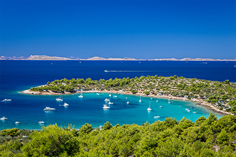
Croatian sunsets are celebrated as some of the most beautiful found anywhere in the world, comparable with those seen at the legendary Café Mambo in Ibiza.
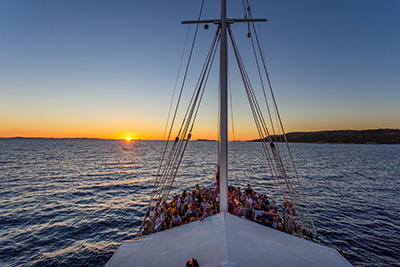
Just a short drive away, Plitvice Lakes National Park is one of the oldest national parks in Southeast Europe and the largest national parks in Croatia. This beautiful site was added to the UNESCO World Heritage register in 1979.
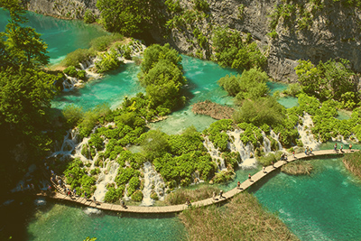
The nearby Kornati National Park is often mentioned as "nautical paradise" in tourist publications. And really, in "slalom" sailing through the 89 unforgettable islands, islets and reefs in the Kornati National Park, you will test all of your nautical skills, particularly if the weather puts in some effort.
Croatia is home to some incredible cuisine with speciality Dalmatian seafood and steak dishes plentiful across both the Festival site itself and in the town of Tisno.
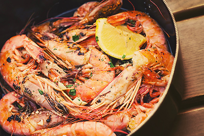
On the site itself there is a restaurant as well as various different food outlets, so you won’t have to go far to find something delicious to satisfy your appetite.
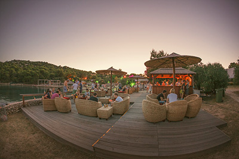
From cracking open that first beer of the day, to getting the party started with one of the many cocktails available on-site, a plethora of both alcoholic and non-alcoholic options are available from the many bars at Defected Croatia. Sipping in the sun has never been this fun...
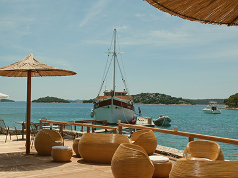
There’s a great selection of restaurants serving both international and local fare in Tisno. Here’s a selection of some of the them.
Carmen – Beautiful sea views and a traditional atmosphere awaits. Address: Pod Garmom 33, Tisno
Tavern Broscica - Famous for their black risotto and grilled steak speciality served in a traditional tavern setting. Address: Obala Sv. Put Brošcice 12, 22240 Tisno
Toni – The steaks at this seafront restaurant are not to be missed! Address: Put Broš?ice 13, Tisno
Kapela – A relaxed traditional restaurant with an outdoor terraced area. Address: Dubrava kod Tisnog 60, Tisno
Martin Pizzeria – Serves delicious and reasonably priced stonebaked pizzas late into the night. Address: Obala svetog Martina 3 Tisno, 22240, Tisno
Banovi Dvori – An unassuming but highly recommended restaurant serving a huge variety of local Croatian dishes. Address: Biograd na Maru, Tisno
Antonio – A very popular seafood restaurant with a buzzing atmosphere. Address: Put Jazine 37, Tisno
Prova – A beautiful and relaxing dining experience with international and Mediterranean dishes to suit any palette. Address: Fut Jazine 41 22240, Tisno
Ferali – Try the famous seafood platters for a true taste of the Adriatic. Address: Obala Sv.Martina 5, Tisno